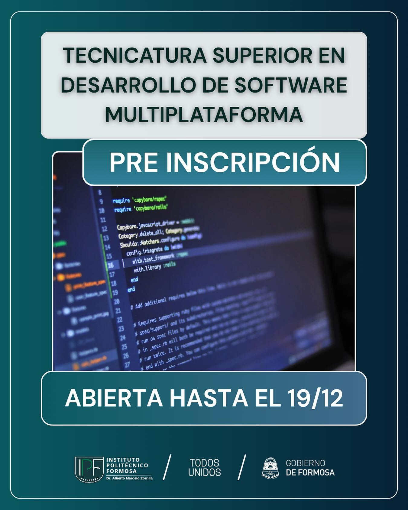

Ofertas Academicas

Tecnicatura Superior en Desarrollo de Software Multiplataforma
Forma profesionales en el diseño, programación e implementación de software para entornos web, móvil y de escritorio

Tecnicatura Superior en Mecatrónica
Integra mecánica, electrónica y sistemas de control para la operación y mantenimiento de maquinaria industrial automatizada.
Tecnicatura Superior en Telecomunicaciones
Capacita en la instalación, operación y mantenimiento de sistemas de comunicación y redes de datos
Tecnicatura Superior en Química Industrial
Forma técnicos en procesos de transformación de materias primas, control de calidad y supervisión de producción en plantas químicas, petroleras y energéticas.